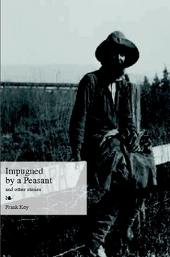

Wednesday, November the 3rd, 2010
back to: title, date or indexes

In 1922, Charles Ives self-published his collection of 114 songs. Now, almost one hundred years later, Mr Key has self-published a collection of 114 stories. Yes, at last, wrenched from the innermost core of his creative innards, Impugned By A Peasant & Other Stories is available for you to buy, to fawn over, to stroke tenderly with your fingertips just like Christopher Plummer as Atahualpa in The Royal Hunt Of The Sun, in dazzling sunlight, strokes the Holy Bible. Or you may prefer to keep your copy locked away in a lead-lined cabinet, submerged in a pit, cordoned off by an electric fence patrolled by wolves and hogs. It's up to you, really. The important thing is that you buy as many copies of the book as a sensible person would, what with Christmas coming up, and all those birthdays and anniversaries and saints' feast days on which you will want to present your nearest and dearest with a treasurable gift. So get with the programme, readers, and hike over to Lulu at once to make your purchase!